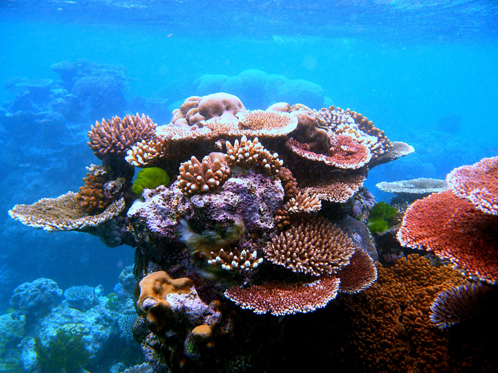
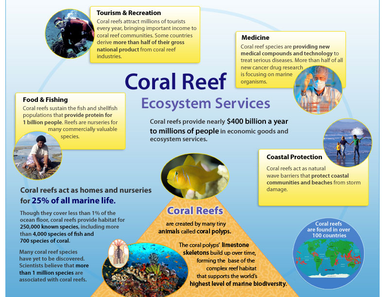
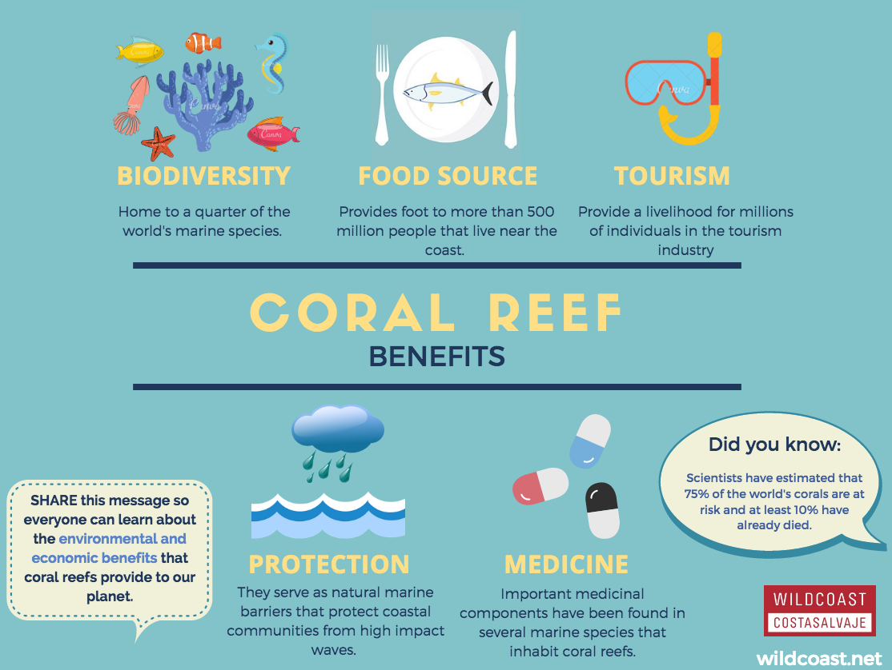
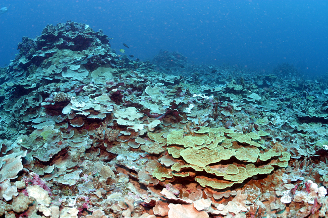
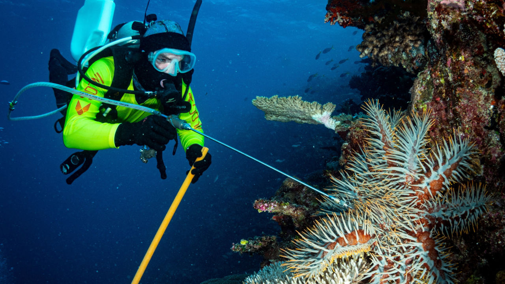
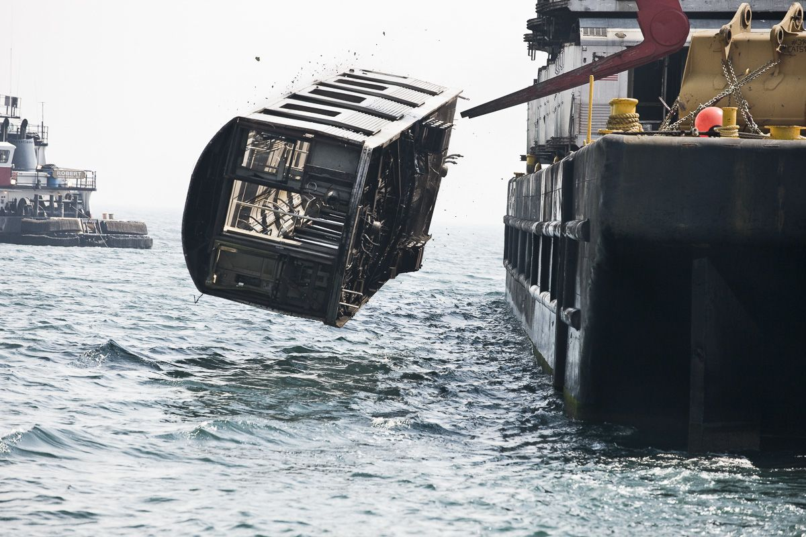

Let's protect Coral reefs
Coral reefs, often referred to as the “rainforests of the sea,” are among the most diverse and vital ecosystems on our planet. Despite covering less than 1% of the ocean floor, they support about 25% of all marine species, providing habitat and sustenance for a vast array of organisms. Their importance extends beyond marine biodiversity, offering environmental, economic, and social benefits that make their preservation a global priority.
One of the most crucial roles of coral reefs is their contribution to marine biodiversity. These ecosystems provide shelter, breeding grounds, and food sources for countless marine species, including fish, crustaceans, mollusks, and larger predators. The complex structures of coral reefs offer protection and create niches where diverse species can thrive. This biodiversity is essential for the resilience and stability of oceanic ecosystems, as it helps maintain ecological balance and supports food webs.
Coral reefs also play a significant role in coastal protection. Acting as natural barriers, they dissipate the energy of incoming waves, reducing the impact of storms, hurricanes, and coastal erosion. By absorbing wave energy, coral reefs safeguard shorelines, protecting coastal communities, infrastructure, and ecosystems like mangroves and seagrass beds. This protective function is becoming increasingly important as climate change leads to rising sea levels and more frequent extreme weather events.
In addition to their environmental importance, coral reefs contribute significantly to the global economy. They support fisheries by providing habitat for commercially valuable fish species, ensuring sustainable seafood supplies for millions of people worldwide. Coral reef tourism, including snorkeling, diving, and eco-tourism, generates billions of dollars annually, providing livelihoods for local communities and promoting environmental awareness. The economic benefits of coral reefs highlight the need for their preservation and responsible management.
Coral reefs also offer potential for medical discoveries. Many marine organisms produce unique compounds with promising pharmaceutical applications, including treatments for cancer, bacterial infections, and inflammatory diseases. The rich biodiversity of coral reefs represents an untapped resource for bioprospecting and medical research, emphasizing the importance of preserving these ecosystems for future scientific advancement.


Despite their immense value, coral reefs face numerous threats from human activity and climate change. Overfishing disrupts ecological balance, leading to the decline of key species and altering reef dynamics. Pollution, particularly plastic waste and chemical runoff, degrades water quality and harms marine life. Coastal development and destructive fishing practices, such as dynamite and cyanide fishing, physically damage reef structures.
Climate change poses a severe and growing threat to coral reefs. Rising sea temperatures cause coral bleaching, a phenomenon where corals expel the symbiotic algae that provide them with nutrients and color. Prolonged bleaching events weaken coral health and can lead to widespread reef die-offs. Ocean acidification, driven by increased carbon dioxide absorption, reduces the ability of corals to build their calcium carbonate skeletons, further endangering reef stability.
Conserving and protecting coral reefs requires global cooperation and localized action. Establishing marine protected areas (MPAs) helps safeguard reef ecosystems by regulating fishing, tourism, and development activities. Promoting sustainable fishing practices, reducing pollution, and implementing climate change mitigation strategies are essential for preserving reef health.
Community involvement and education play a vital role in coral reef conservation. Citizen science initiatives, such as reef monitoring and data collection, empower individuals to contribute to conservation efforts. Restoration projects, including coral gardening and artificial reef construction, help rebuild damaged reefs and enhance their resilience. Raising awareness about the importance of coral reefs fosters a sense of stewardship and collective responsibility.



